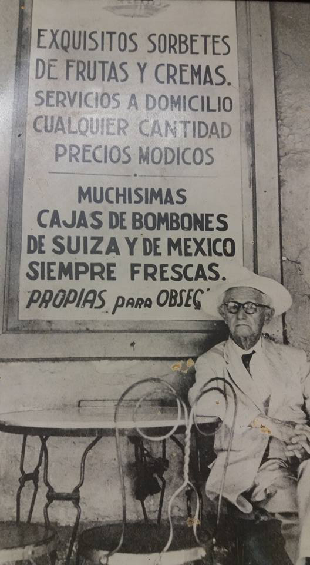
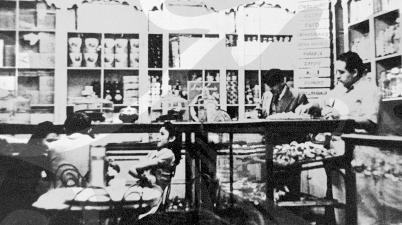
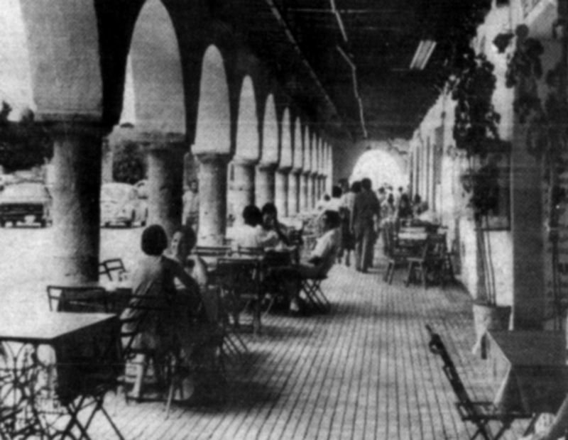
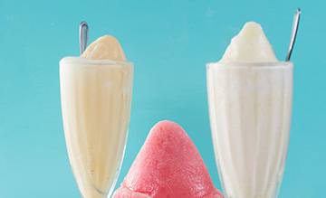

Mérida, Yucatán · Est. MCMVII
Sorbetes de fruta natural del trópico yucateco
Del mismo portal donde don Vicente Rodríguez Peláez abrió sus puertas en 1907, seguimos batiendo la receta que enamoró a Mérida: tersa, natural y sin cristales de hielo.
Nuestra historia
En 1907, don Vicente Rodríguez Peláez —junto a su amigo de la infancia don Felipe Sánchez— abrió la Dulcería y Sorbetería Colón en el punto de mayor vida social y comercial de la ciudad, cuando el Paseo de Montejo apenas nacía a la francesa.
Más de un siglo después seguimos fieles a las recetas originales: fruta de temporada del trópico yucateco convertida en sorbetes tersos, con el punto justo de dulzor. Generaciones de meridanos y viajeros de todo el mundo hacen su parada obligada bajo nuestros portales.




Leche fría batida Sorbete de guanábana Servida al momentoLa especialidad de la casa
Leche fría batida con una bola de tu sorbete favorito —casi siempre guanábana—. Cremosa, refrescante y absolutamente meridana: la bebida que solo se entiende cuando se prueba aquí.
Es el rito de quien crece en Mérida y el descubrimiento de quien nos visita por primera vez. Si es tu primera vez, empieza por ella.
Pídela en cualquiera de nuestras sucursales
La carta
Sorbetes de fruta natural batidos cada día. Toca un sabor para conocerlo. Los sabores cambian con la temporada del trópico.
También de temporada
También encontrarás pastelitos individuales y dulces tradicionales para acompañar o para llevar. ¿Un antojo especial? Visítanos o llámanos.
Bajo nuestros portales
En más de un siglo, artistas, escritores, viajeros y familias enteras se han refrescado con un sorbete Colón. Este muro es suyo.
Visítanos
Del Centro histórico al Paseo de Montejo. Toca una sucursal para llamar o trazar la ruta.
Antes de venir
Horarios y reservasConfírmanos horario y disponibilidad por teléfono en tu sucursal más cercana; con gusto te atendemos. También estamos en Facebook.
Cientos de reseñas de todo el mundo en Google